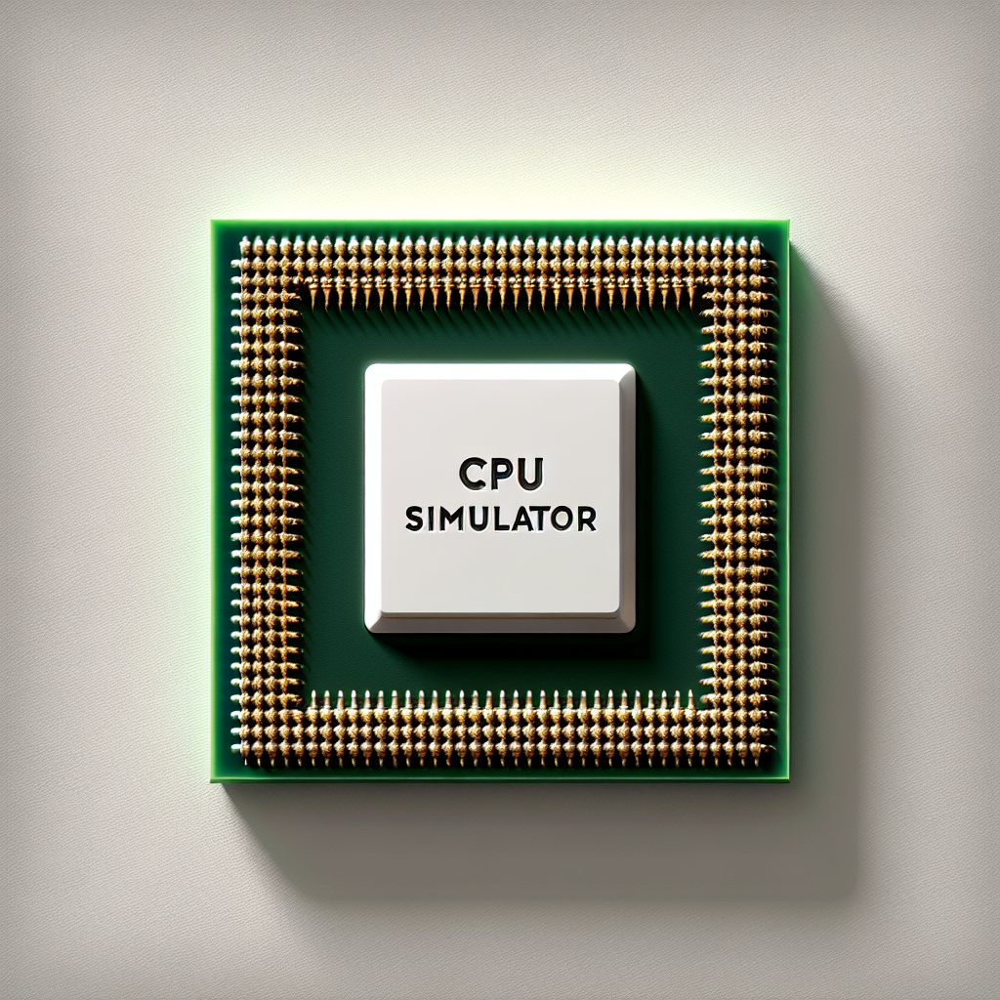
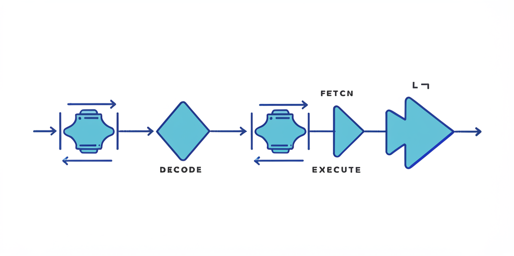

Interactive Simulators
Hands-on learning with our interactive simulators

CPU Simulator
Explore the inner workings of a CPU with this interactive simulator. Learn about fetch-decode-execute cycles and register operations.
Launch Simulator.jpg)
Memory Hierarchy Simulator
Visualize data flow through different levels of memory cache, and understand concepts like cache hits, misses, and replacement policies.
Launch Simulator

Pipelining Visualizer
See pipelining in action and explore how modern processor designs handle hazards, stalls, and data dependencies using techniques like forwarding and stalling
Launch Simulator